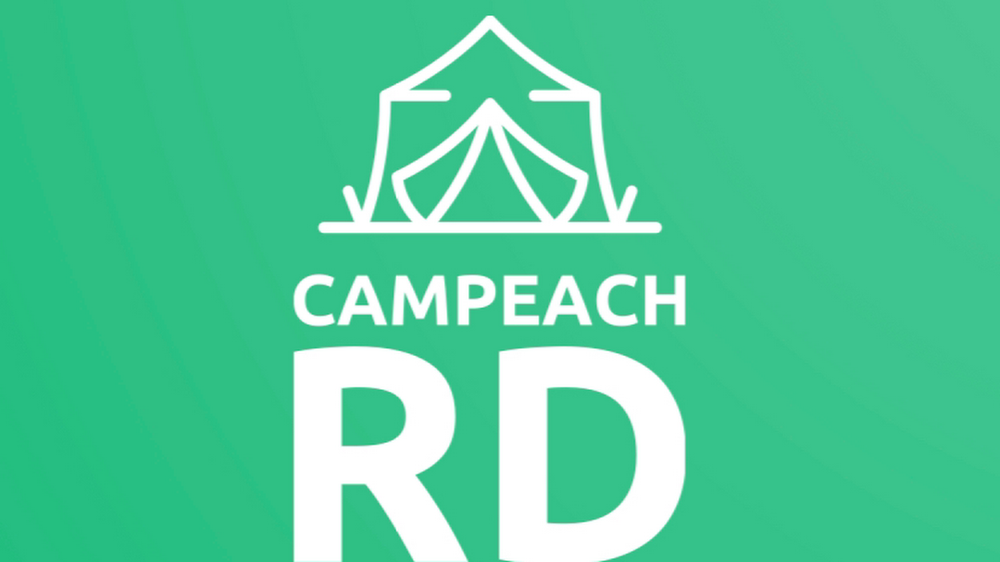

Ultima actualizacion: 24 de julio de 2026
Eliminacion de datos
Si contactaste a Campeach RD por nuestra web, WhatsApp, Instagram, Facebook, formularios o anuncios de Meta, puedes solicitar la eliminacion de tus datos personales siguiendo estas instrucciones.
Como solicitar la eliminacion
- Escribe por WhatsApp a +1 829 937 0674 con el mensaje: "Quiero solicitar la eliminacion de mis datos personales".
- Incluye el nombre, telefono o correo con el que nos contactaste para poder identificar tu solicitud.
- El equipo de Campeach RD revisara la solicitud y confirmara cuando el proceso haya sido completado.
Que datos pueden eliminarse
Podemos eliminar datos de contacto, conversaciones comerciales, preferencias de viaje, solicitudes de campamentos, registros de interes y datos asociados a formularios o anuncios, salvo informacion que debamos conservar por motivos legales, contables, seguridad, prevencion de fraude o cumplimiento de obligaciones operativas.
Tiempo de respuesta
Normalmente procesamos solicitudes de eliminacion en un plazo razonable despues de validar la identidad del solicitante y localizar la informacion correspondiente.
Contacto directo
Canal oficial para solicitudes de datos: WhatsApp Campeach RD .